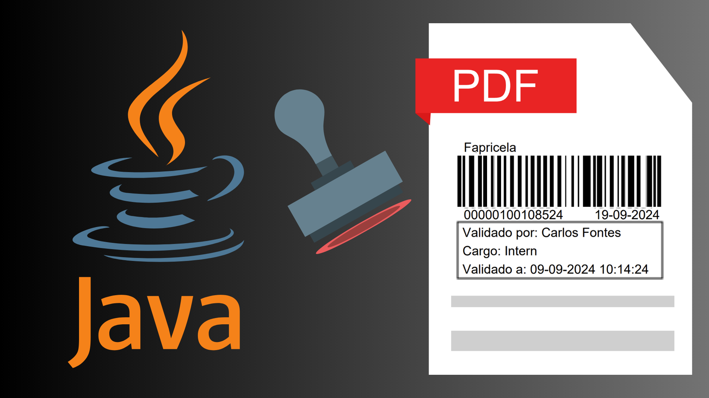

A comprehensive automation solution that revolutionized financial document processing workflows, achieving 95% reduction in processing time and 99.7% accuracy in barcode placement through intelligent computer vision algorithms.

The previous workflow required physically printing financial documents (if not already printed), generating barcode stickers, manually affixing them to the paper, conducting subsequent validation, and then re-digitizing the documents for further processing.
An algorithm that receives a financial document and a barcode identifying the document, analyzes the document to locate an empty space for placing the barcode (if no space is available, it is queued for a human operator to fit it into a suitable spot), and then saves the PDF for later validation by a professional. All of this is performed almost entirely automatically with minimal human interaction.
The application features a multi-layered architecture with PDF document parsing, multi-page navigation, and real-time preview capabilities using WebView integration for seamless document handling.
Dual barcode generation system supporting Code128 barcodes via Barcode4J library and QR codes through Google ZXing, with canvas-based rendering for high-quality output.
OpenCV-powered white space detection algorithms analyze document layout to identify optimal placement zones for barcodes and digital signatures automatically.
Sophisticated canvas controller manages multiple layers with drag-and-drop functionality, enabling precise positioning and complex document composition with collision detection.
The application supports Editor mode for interactive document editing, STAMP mode for automated barcode placement, and SIGN mode for digital signature integration with metadata embedding.
The project utilized a module-based development approach with Java Platform Module System (JPMS) for clean architecture separation. The development process emphasized object-oriented design principles with MVC pattern implementation, ensuring maintainable and scalable code structure. Performance optimizations included lazy loading for large PDF documents, canvas pooling for efficient memory management, and asynchronous rendering for responsive UI interactions.
Modular architecture design • Multi-threading and asynchronous processing • Performance optimization • Memory management • UI/UX design • Cross-platform development • Document processing • Image manipulation • Enterprise desktop applications